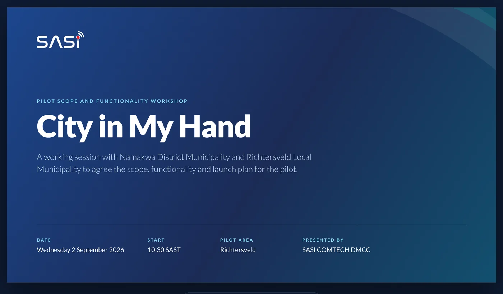
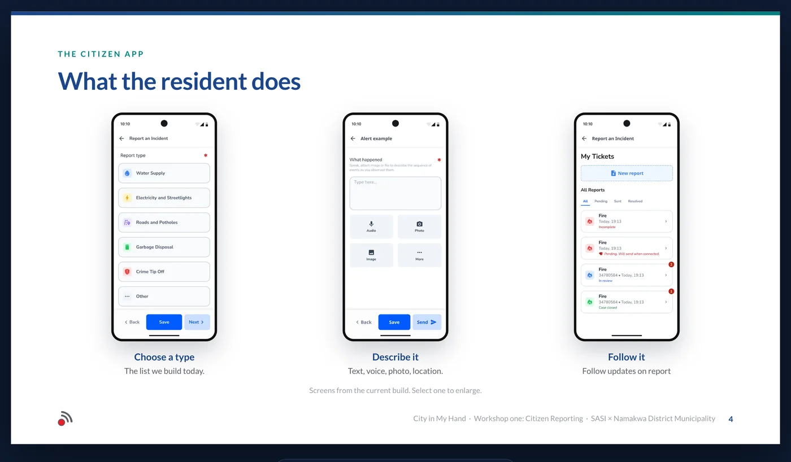
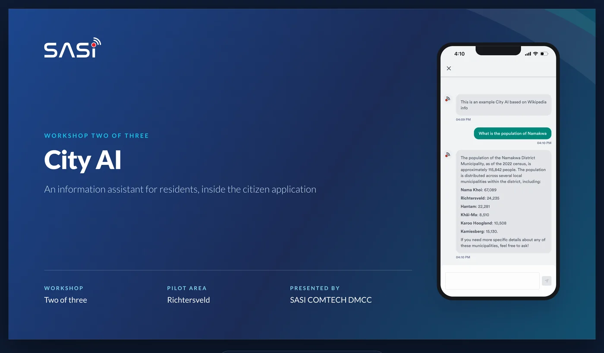
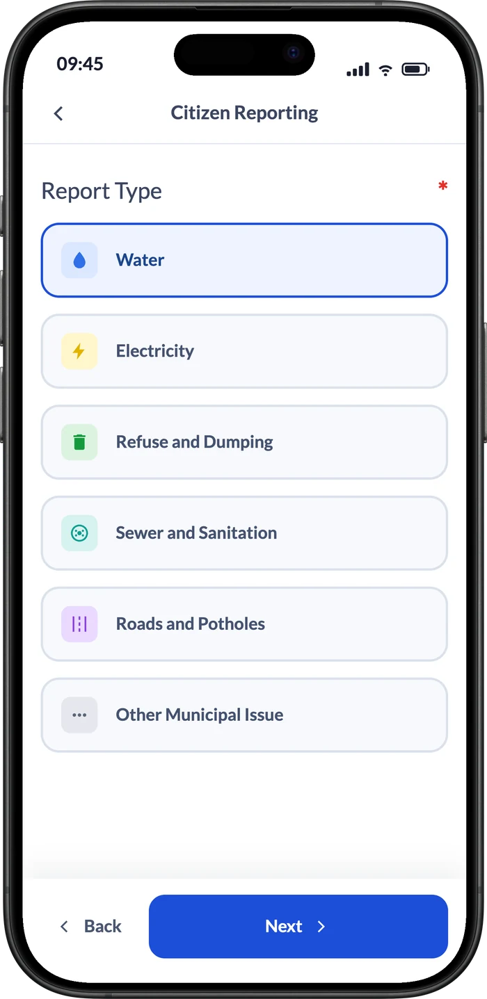
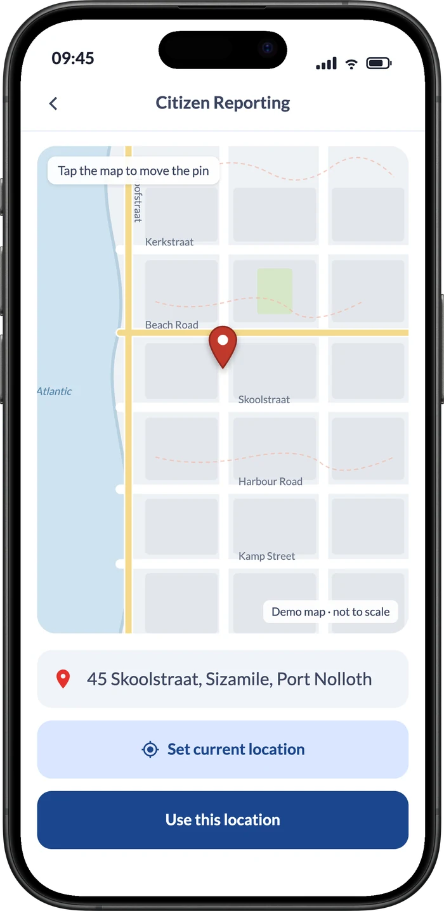
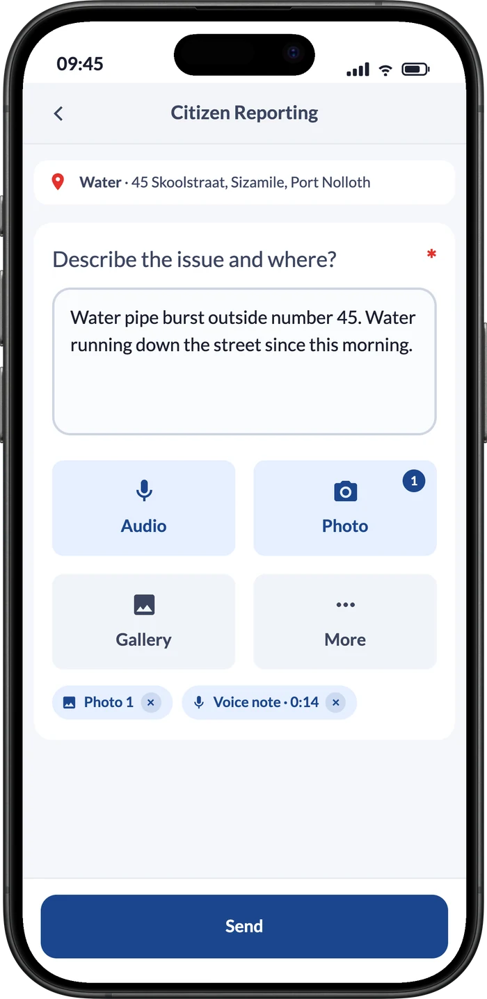
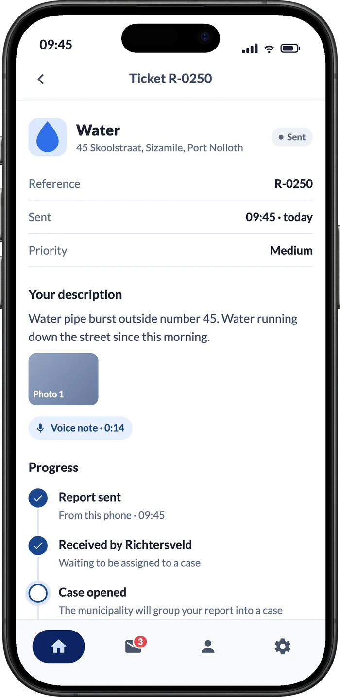
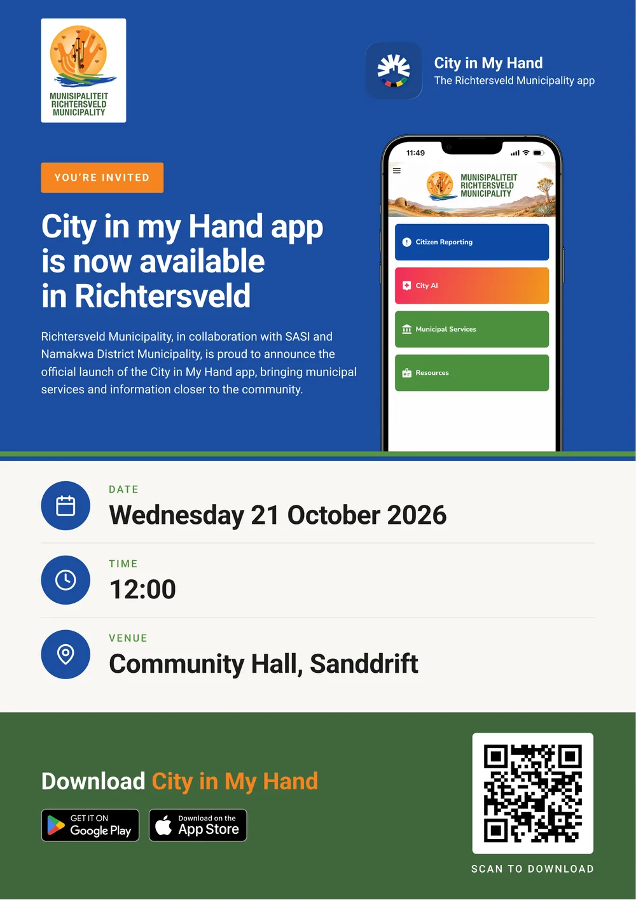
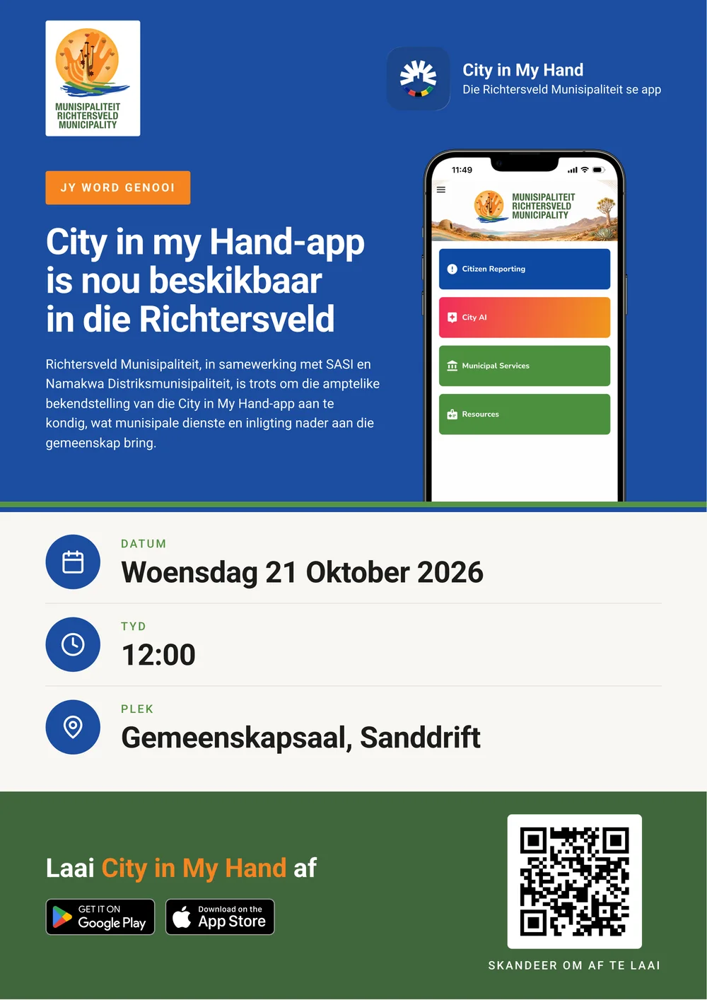

One issue, one case
Richtersveld is a vast, quiet corner of South Africa’s Northern Cape. We gave residents an app to report problems, and gave the municipality a console where AI groups duplicate reports into a single case, so a small team fixes each issue once and answers everyone who reported it.

- Client
- Richtersveld Municipality
- Location
- Northern Cape, South Africa
- My role
- Product designer
- Timeline
- Aug – Oct 2026
- Platform
- Web console, SASI resident app
- Tools
- Claude, Claude Code
A big place with few hands
Richtersveld Local Municipality looks after a handful of towns spread across desert and coast, from Port Nolloth to Kuboes. The pilot ran with Namakwa District Municipality and launched publicly on 21 October 2026.
Who it’s for
What I designed, and what I worked within
- The console is mine end to end. Every screen, state and rule the municipal team works with.
- The resident app was built on the SASI Admin platform. It collects reports, photos and voice notes and sends them to the console.
Ten reports, one burst pipe
- Reporting meant a phone call or a trip to the office. There was no shared record of what residents had asked for.
- One fault creates many reports. Treat each as its own job and crews make wasted trips. Fold them into one and the municipality loses count of who’s affected.
- Residents rarely hear back. Without a case to hang updates on, closing the loop depends on someone remembering.
- Three languages, patchy signal. Many residents speak Afrikaans or Nama, and connectivity drops outside the main towns.
How might a small municipal team turn a stream of duplicate reports into a short list of real problems, without losing a single resident’s voice?
Agreeing the rules before drawing screens
A short series of workshops with Namakwa District and Richtersveld, then a look at what other cities use.
Workshops with the municipality



What we agreed
Decisions recorded in the workshop decks, Aug to Sep 2026.
How other cities handle duplicates
I compared the two biggest international platforms and Cape Town’s own service on what mattered most here: duplicates, closing the loop and language.
| What matters | FixMyStreet | SeeClickFix | Cape Town | Ours |
|---|---|---|---|---|
| Spots duplicates while a resident reports | ||||
| Groups reports after they arrive, with evidence | ||||
| Keeps every report in the count | ||||
| Tells everyone on the case when it’s fixed | ||||
| Updates in the resident’s language | ||||
| Works on weak signal |
Desk research, Nov 2026, from product docs, city press releases and app stores. “No or not found” means we couldn’t verify it publicly.
- Duplicates are caught at the door, or not at all. Every tool checks category and distance while a resident reports, so a miscategorised report slips through.
- Merging erases people. SeeClickFix archives the duplicate for good and FixMyStreet closes it, so those households drop out of the count.
- South African metros rely on instructions. Cape Town tells residents that reporting again won’t change the queue.
- Channels are local, apps are English. Cities run WhatsApp, USSD and SMS lines, but their apps stay English-only.
Who we designed for
Two proto-personas, drawn from the workshops and the municipality’s own team structure.
“I don’t mind waiting. I mind not knowing.”
- Report a problem without a phone call or a queue
- Know it was received, and by whom
- Hear when it’s fixed, in Afrikaans
- Long forms on a small screen
- Weak signal at home
- Reporting into silence
“Tell me it’s the same pipe, and show me why.”
- One job per fault, not ten
- Know how many households are affected
- Update everyone at once when it’s done
- Duplicates that look like new work
- Reports filed under the wrong type
- Chasing residents one by one
Group the work, never the people
Four principles held the design together, most of them straight out of the workshops. Four decisions followed.
Reports are the record, cases are the work
The first console folded duplicates into one record: “3 calls merged into this record”. That made the backlog look smaller than it was. So reports stay untouched, and a case collects them.
“Five reports of one burst main means five households.” Design study, 26 Aug
One suggestion, two facts
The first matcher showed a confidence score and “also considered” runners-up. Nobody could check a 0.64. The suggestion was cut down to the two things a person checks before grouping: is it the same place, and the same kind of fault.
“A confidence score alone cannot be checked, so it cannot be corrected.” The number still drives the workflow, but it never reaches the screen.
Fast when it’s sure, careful when it isn’t
Most reports aren’t ambiguous, so the system can move fast on the obvious ones and slow down on the rest.
- Below 0.80, nothing is suggested. Operators search or open a new case.
- Above 0.90, the report is placed on the case and the resident is asked in the app to confirm.
- “No, it’s different” removes the match for good.
- Nothing is ever grouped across departments, or into a closed case.
Close the loop, in three languages
Marking a case resolved asks for the cause and the work done, then offers to tell every resident on it. Each update is translated on send into the language the resident chose.
From a phone in Port Nolloth to a case in the office
The resident app, built on the SASI Admin platform, collects a report in about a minute. The console is where the work happens.




Launch, in two languages
A product nobody hears about doesn’t help anyone. I designed the launch posters and social posts in English and Afrikaans for the public launch in Sanddrift.


Workshops set the rules, engineering set the numbers
What came up along the way, and what changed because of it.
| What came up | What changed |
|---|---|
| Privacy under POPIA | Privacy Policy and Terms on the first screen. Hosting, consent and retention settled in a dedicated session before go-live. |
| Who handles what | Six report types, each mapped to one department, agreed in the citizen reporting workshop. |
| Weak signal in smaller towns | The console accepts reports the app sends late, plus in-person onboarding where it’s needed. |
| Load-shedding | Auto-suggest switched off for electricity, where outages produce look-alike reports. |
What I handed to engineering
Every household hears back
The app launched publicly on 21 October 2026. These are the targets we agreed to measure against.
Evidence beats confidence
Next
- WhatsApp reporting, the channel South African residents already use.
- Residents confirming matches themselves: “Is this the same problem?”
- Nama in the app, not just in updates.